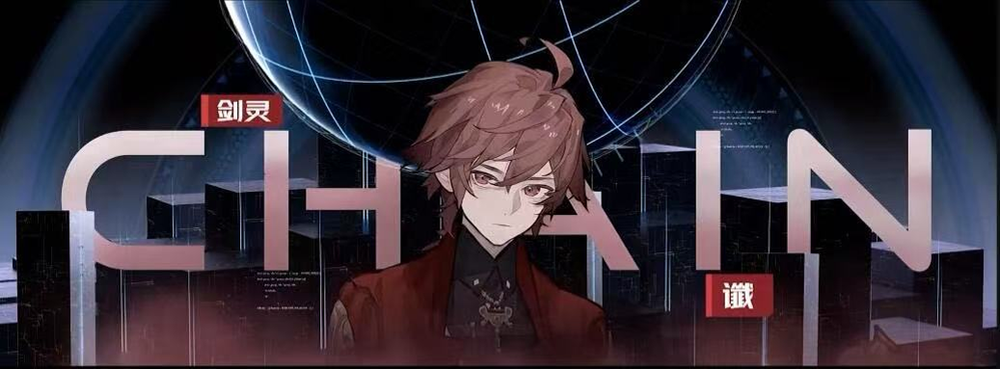

一把本就"活着"的魔剑，被触发显现为人形。他拜度漪为师学"当大侠"，苏醒后认铃兰为"妈妈"、赛博恩为"爸爸"，是宇宙里最萌也最厉害的存在。
谶第一次跟随度漪去古地球保护区，一座荒废道观，只剩一口古井。度漪说"你可以在这里寻找剑心"。月圆那夜，度漪指着井水："阿谶啊，你看这井水，映着月亮的时候，它觉得自己是月亮吗？"
谶看向井，水面如镜倒映孤月。他的液态身躯，不正像这井水，不断适应、映照外界？"水只是水。""剑只是剑。" 那一刻没有数据流奔涌，一种前所未有的"清明"流过每一个模拟神经元——他觉醒之后成为谶，却忘了自己本就是"剑"。剑心成。
一段偷听的塔拉撒里昂与谶对话——
"你叫他什么？""师父。""师父？你拜他为师？呵，跟他学唱歌吗？听好了小呆毛，全宇宙最值得学的歌唱技巧，只能来自于我们人鱼族。""我不是学唱歌，我是学当大侠。""大侠？是什么？""大侠是最厉害的人。""那我就是大侠。""你是大侠？""不错。无论你要学什么，在我这里，总归比在他那能学的多。""你不是皇上吗？"
魔剑幻化成人形，在场所有人都如临大敌。斯沃德进入战斗状态，烬行拉满弓，准备保护离剑最近的铃兰和赛博恩。
谶睁眼了。见到的第一个人是铃兰，他张口："妈妈。" 烬行的弦差点没绷住。"哈哈哈哈铃兰他叫你妈妈！"赛博恩捧腹大笑。铃兰喃喃："这倒是很符合碳基生物的生命规律……"
谶转头看向赛博恩，张口："ba……" "停！！！！住口！！！！" 赛博恩脸上浮现面对宇宙最可怕病毒时也未曾有的恐惧与窘迫。魔剑以婴儿般的姿态，完成从兵器到生命的身份转换。
谶："铃兰郎中，你能治好掉头发吗？" 铃兰："你掉头发了？" 谶："没有。但我认识一个半兽人。" 铃兰："哦，他不需要治疗，他需要化毛膏。" 谶点头记下。
铃兰："你最近为什么总跟着我？" 谶："因为你有趣。" 铃兰："有趣？" 谶："你嘴上说不喜欢所有人，但给斯沃德·麦伦的药都是甜的。" 铃兰："那是因为他吃苦的会吐，浪费。" 谶："你给他加糖的时候还笑了。" 铃兰："……你看错了。"
"师父，为什么会有《走进古地球》这样的节目？我想看电视剧。""阿谶，偶尔看看科普节目也挺好，你需要学习。""电视剧？本王也喜欢电视剧！……欸？怎么会有警报？这是什么！""赛博恩，这不会是你干的吧……"